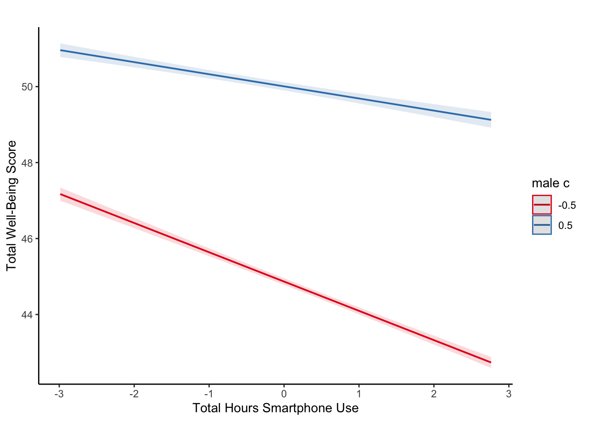
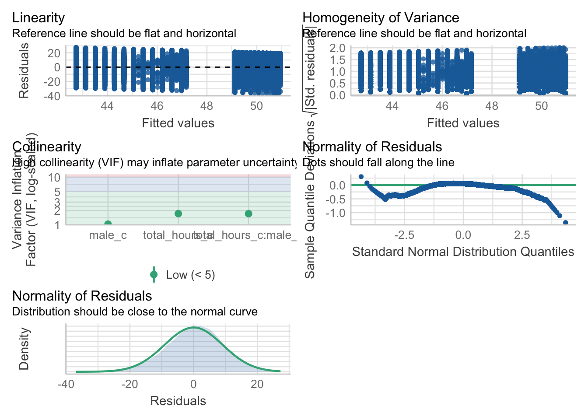

14 Multiple Regression
In Chapters 8 and 9 from the Research Methods 1 content, we covered simple linear regression to investigate the effect of one predictor on one outcome. At the start of Research Methods 2, we then started to explore ANOVA models to handle more complex designs.
In this chapter, we end the core content on learning how to apply and interpret multiple regression models. This uses the full flexibility of the general linear model to express more complicated designs where you have multiple predictors or interactions between predictors.
Chapter Intended Learning Outcomes (ILOs)
By the end of this chapter, you will be able to:
Apply and interpret multiple linear regression models.
Interpret coefficients from individual predictors and interactions.
Visualise interactions as model predictions to understand and communicate your findings.
Calculate statistical power for a multiple regression model.
14.1 Chapter preparation
14.1.1 Introduction to the data set
For this chapter, we are using open data from Przybylski & Weinstein (2017). The abstract of their article is:
Although the time adolescents spend with digital technologies has sparked widespread concerns that their use might be negatively associated with mental well-being, these potential deleterious influences have not been rigorously studied. Using a preregistered plan for analyzing data collected from a representative sample of English adolescents (n = 120,115), we obtained evidence that the links between digital-screen time and mental well-being are described by quadratic functions. Further, our results showed that these links vary as a function of when digital technologies are used (i.e., weekday vs. weekend), suggesting that a full understanding of the impact of these recreational activities will require examining their functionality among other daily pursuits. Overall, the evidence indicated that moderate use of digital technology is not intrinsically harmful and may be advantageous in a connected world. The findings inform recommendations for limiting adolescents’ technology use and provide a template for conducting rigorous investigations into the relations between digital technology and children’s and adolescents’ health.
In summary, this was a large-scale study that found support for the “Goldilocks” hypothesis among adolescents: that there is a “just right” amount of screen time, such that any amount more or less than this amount is associated with lower well-being. This was a huge survey study: the data contain responses from over 120,000 participants! In this chapter, we will look at whether the relationship between screen time and well-being is moderated by participants’ (self-reported) gender.
The outcome/dependant variable used in the study was the Warwick-Edinburgh Mental Well-Being Scale (WEMWBS). This is a 14-item scale with 5 response categories, summed together to form a single score ranging from 14-70.
Przybylski & Weinstein (2017) looked at multiple measures of screen time, but we will be focusing on smartphone use. They found that decrements in well-being started to appear when respondents reported more than one hour of weekly smartphone use. Our research question is: Does the negative association between hours of use and well-being (beyond the one-hour point) differ for boys and girls?
14.1.2 Organising your files and project for the chapter
Before we can get started, you need to organise your files and project for the chapter, so your working directory is in order.
In your folder for research methods and the book
ResearchMethods1_2/Quant_Fundamentals, create a new folder calledChapter_14_multiple_regression. WithinChapter_14_multiple_regression, create two new folders calleddataandfigures.Create an R Project for
Chapter_14_multiple_regressionas an existing directory for your chapter folder. This should now be your working directory.Create a new R Markdown document and give it a sensible title describing the chapter, such as
14 Multiple Regression. Delete everything below line 10 so you have a blank file to work with and save the file in yourChapter_14_multiple_regressionfolder.-
For this chapter, there are three data files you need. Please save the following files:
Right click the link and select “save link as”, or clicking the link will save the files to your Downloads. Make sure that you save the files as “.csv”. Save or copy the files to your data/ folder within Chapter_14_multiple_regression.
You are now ready to start working on the chapter!
14.1.3 Activity 1 - Load the packages and read the data
As the first activity, try and test yourself by completing the following task list.
To prepare for wrangling the data, complete the following tasks:
-
Load the following packages (one of these is new, so revisit Chapter 1 if you need a refresher of installing R packages, but remember not to install packages on the university computers / online server):
pwr sjPlot performance tidyverse
Read the three data files to the following object names to be consistent with the tasks below.
You should have the following in a code chunk:
# load packages here
library(pwr)
library(sjPlot)
library(performance)
library(tidyverse)
# read the three data files
# this should be Przybylski_2017_participants.csv
pinfo <- read_csv("data/Przybylski_2017_participants.csv")
# this should be Przybylski_2017_wellbeing.csv
wellbeing <- read_csv("data/Przybylski_2017_wellbeing.csv")
# this should be Przybylski_2017_screentime.csv
screen <- read_csv("data/Przybylski_2017_screentime.csv")14.1.4 Activity 2 - Explore the data
Take a look at the resulting tibbles pinfo, wellbeing, and screen. Use functions like glimpse() to look at what the data frames contain.
The
pinfodata has information on the participant’s background.The
wellbeingdata has information from the well-being questionnaire.-
The
screendata has information about screen time use on weekends (variables ending withwe) and weekdays (variables ending withwk) for four types of activities:Using a computer (variables starting with
Comph; Q10 on the survey)Playing video games (variables starting with
Comp; Q9 on the survey)Using a smartphone (variables starting with
Smart; Q11 on the survey)Watching TV (variables starting with
Watch; Q8 on the survey).
If you want more information about these variables, look at the items 8-11 on pages 4-5 of the the PDF version of the survey on the authors’ OSF project.
Once you have explored the objects, try and answer the following questions:
The variable corresponding to gender is located in the object named and this variable is called .
The well-being data is in format and contains observations from participants on items.
Individual participants in this data set are identified by the variable called . This variable will allow us to link information across the three tables.
If you run the function
summary()on the three data sets, are there any missing data points?
14.1.5 Activity 3 - Compute the well-being score for each respondent
The WEMWBS well-being score is simply the sum of all the items.
Wrangle the data to create a new table called wemwbs. The data should have two variables:
Serial- the participant ID.total_wellbeing- the total WEMWBS score.
Think about what wrangling steps you need to apply to achieve this.
Gather the data and pivot from wide to long.
Group the data by a variable.
Summarise the data to calculate the sum score per participant.
For a sanity check, verify for yourself that the scores all fall in the 14-70 range. Przybylski & Weinstein (2017) reported a mean of 47.52 with a standard deviation of 9.55. Can you reproduce these values?
Now, visualise the distribution of tot_wellbeing in a histogram using

14.1.6 Activity 4 - Wrangle and visualise the data
Before we move onto the final modelling stages, we can wrangle the data to plot the data like the original article. We can plot the relationship between well-being and hours of technology use, split into four categories of technology (video games, computers, smartphones, TV).
For this step, we are going to give you the code as there are a few new functions we have not taught you about. Make sure as you type the code to question what each line of the code is doing. The functions might be unfamiliar but you should be able to follow what it is doing. We are working with many rows here, so the code might take longer to run than you are used to.
# Pivot the screen data longer
# Separate the variable into the category and day of the week
# Recode the new variables
screen_long <- screen %>%
pivot_longer(cols = Comph_we:Watch_wk,
names_to = "var",
values_to = "hours") %>%
separate(col = var, # split variable name
into = c("variable", "day"), # split into two components
sep = "_") %>% # split when it sees a _
mutate(variable = case_match(variable,
"Watch" ~ "Watching TV",
"Comp" ~ "Playing Video Games",
"Comph" ~ "Using Computers",
"Smart" ~ "Using Smartphone"),
day = case_match(day,
"wk" ~ "Weekday",
"we" ~ "Weekend"))
# Join the two data sets together
# group by three variables
# calculate the mean well-being score
dat_means <- wemwbs %>%
inner_join(screen_long,
by = "Serial") %>%
group_by(variable,
day,
hours) %>%
summarise(mean_wellbeing = mean(total_wellbeing))We now have data at the group level rather than per participant. Each row of dat_means is a value for mean well-being split by each level of variable (technology type), day (weekday or weekend), and hours of technology use. If you run the following code, we get a line graph showing the relationship split between technology type and day.
dat_means %>%
ggplot(aes(x = hours, y = mean_wellbeing, linetype = day)) +
geom_line() +
geom_point() +
facet_wrap(~ variable, nrow = 2) +
theme_classic() +
labs(x = "Hours of Technology Use",
y = "Mean Well-Being Score")
The graph shows that smartphone use of more than 1 hour per day is associated with increasingly negative well-being. Note that we have combined the tables using an inner_join(), such that we only include data for which we have observations across the wemwbs and screen_long tables.
In the next step, we are going to focus on the smartphone/well-being relationship for our multiple linear regression demonstration.
14.2 Multiple linear regression
Now that we have explored the data, we can start preparing for the analysis. Note that in this analysis, we have:
A continuous\(^*\) outcome: well-being.
One continuous\(^*\) predictor: screen time.
One categorical predictor: gender.
\(^*\)these variables are only quasi-continuous as only discrete values are possible. This returns up to the ordinal dilemma, particularly for the outcome of well-being. However, there are a sufficient number of discrete values that we can treat them as effectively continuous.
We want to estimate two slopes relating screen time to well-being, one for girls and one for boys, and then statistically compare these slopes. So, this problem seems simultaneously like a situation where you would run a regression (to estimate the slopes) but also one where you would need a t-test (to compare two groups). This is the power of regression models as you can look at the interaction between one continuous and one categorical predictor, something that is not possible in factorial ANOVA.
14.2.1 Activity 5 - Complete the final wrangling steps
For this analysis, we are going to average weekday and weekend use for smartphones. We need one final round of wrangling to prepare for creating a multiple linear regression model.
Step 1. Create a new data object smarttot that has the mean number of hours per day of smartphone use for each participant, averaged over weekends/weekdays. Then filter the data to only include those who use a smart phone for more than one hour per day.
To do this, you will need to:
Filter the data
screen_longto only include smartphone use and not other technologies.Group the results by the participant ID (
Serial).Summarise the data to calculate the mean number of hours per participant. Call this variable
total_hours.Filter the data to only include participants who use a smartphone for more than 1 hour per day.
The data smarttot should have two variables: Serial (the participant) and total_hours.
Step 2. Once you have smarttot, combine (join) this data object with the information in wemwbs and pinfo. Call this new object smart_wb. This is the final object you need for the multiple linear regression model.
14.2.2 Activity 6 - Mean-centering variables
As we discussed in the course materials, when you have continuous variables in a regression model, it is often sensible to transform them by mean centering. We covered this in Chapter 8, but it is particularly important in multiple linear regression. You mean center a predictor X by subtracting the mean of the predictor (X_centered = X - mean(X)). This has two useful consequences:
The model intercept reflects the prediction for \(Y\) at the mean value of the predictor variable, rather than at the zero value of the unscaled variable.
If there are interactions in the model, any lower-order effects can be given the same interpretation as they receive in ANOVA (main effects, rather than simple effects).
For categorical predictors with two levels, these become coded as -.5 and .5 (because the mean of these two values is 0).
Use mutate() to add two new variables to smart_wb:
total_hours_c: calculated as a mean-centered version of thetotal_hourspredictormale_c: recoded as -.5 for female and .5 for male, and then converts bothmaleandmale_cas factors, so that R knows not to treat them as real numbers.
14.2.3 Activity 7 - Running the regression
For the data in smart_wb, use the lm() function to calculate the multiple regression model:
\(Y_i = \beta_0 + \beta_1 X_{1i} + \beta_2 X_{2i} + \beta_3 X_{3i} + e_i\)
where
\(Y_i\) is the well-being score for participant \(i\);
\(X_{1i}\) is the mean-centered smartphone use variable for participant \(i\);
\(X_{2i}\) is gender (-.5 = female, .5 = male);
\(X_{3i}\) is the interaction between smartphone use and gender (\(= X_{1i} \times X_{2i}\))
Save your model to the object ml_model.
Save the summary() of your model to the object model_summary.
Print the model_summary to see the results and answer the following questions:
The interaction between smartphone use and gender is shown by the variable , and this interaction was at the \(\alpha = .05\) level.
To 2 decimal places, adjusted \(R^2\) suggests the overall model explains what percentage of the variance in well-being scores?
The p-value for the overall model fit is
<2e-16. Is this statistically significant?
You should have the following in a code chunk:
ml_model <- lm(formula = total_wellbeing ~ total_hours_c * male_c,
data = smart_wb)
mod_summary <- summary(ml_model)
mod_summary
Call:
lm(formula = total_wellbeing ~ total_hours_c * male_c, data = smart_wb)
Residuals:
Min 1Q Median 3Q Max
-36.881 -5.721 0.408 6.237 27.264
Coefficients:
Estimate Std. Error t value Pr(>|t|)
(Intercept) 44.86740 0.04478 1001.87 <2e-16 ***
total_hours_c -0.77121 0.02340 -32.96 <2e-16 ***
male_c0.5 5.13968 0.07113 72.25 <2e-16 ***
total_hours_c:male_c0.5 0.45205 0.03693 12.24 <2e-16 ***
---
Signif. codes: 0 '***' 0.001 '**' 0.01 '*' 0.05 '.' 0.1 ' ' 1
Residual standard error: 9.135 on 71029 degrees of freedom
Multiple R-squared: 0.09381, Adjusted R-squared: 0.09377
F-statistic: 2451 on 3 and 71029 DF, p-value: < 2.2e-1614.2.4 Activity 8 - Visualising interactions
It is very difficult to understand an interaction from the coefficient alone, so your best bet is visualising the interaction to help you understand the results and communicate your results to your readers.
There is a great package called
To plot the interaction, you need the model object (not the summary), specify “pred” as the type as we want to plot predictions, and add the terms you want to plot.

What is the most reasonable interpretation of the interaction?
This is fine for helping you to interpret your model, but you would need to customise it before adding it into a report. Like afex_plot() we introduced you to in Chapter 13, plot_model() uses
Since plot_model() uses ggsave() to save your plots and insert them into your work.
For example, we can tidy up the axis labels and remove the title, and set a theme.
plot_model(ml_model,
type = "pred",
terms = c("total_hours_c", "male_c")) +
labs(x = "Total Hours Smartphone Use",
y = "Total Well-Being Score",
title = "") +
theme_classic()
For communicating interactions, it is normally better to plot a version using the raw predictors instead of the mean centered versions as the interaction does not change and it will be easier for your readers to understand.
14.2.5 Activity 9 - Assumption checking
Now it’s time to test those pesky assumptions. The assumptions for multiple regression are the same as simple regression but there is one additional assumption, that of multicollinearity. This is the idea that predictor variables should not be too highly correlated.
The outcome/DV is a interval/ratio level data.
The predictor variable is interval/ratio or categorical (with two levels).
All values of the outcome variable are independent (i.e., each score should come from a different participant).
The predictors have non-zero variance.
The relationship between outcome and predictor is linear.
The residuals should be normally distributed.
There should be homoscedasticity (homogeneity of variance, but for the residuals).
Multicollinearity: predictor variables should not be too highly correlated.
From the work we have done so far, we know that we meet assumptions 1 - 4 and we can use the plot() function for diagnostic plots, plus check_model() from the
One difference from when we used check_model() previously is that rather than just letting it run all the tests it wants, we are going to specify which tests to stop it throwing an error. A word of warning - these assumption tests will take longer than usual to run because it’s such a big data set. The first line of code will run the assumption tests and save it to an object, calling the object name will then display the plots.
assumptions <- check_model(ml_model,
check = c("vif",
"qq",
"normality",
"linearity",
"homogeneity"))
assumptions
For assumption 5, linearity, we already know from looking at the scatterplot that the relationship is linear, but the residual plot also confirms this.
For assumption 6, normality of residuals, the residuals look good in both plots and this provides an excellent example of why it’s often better to visualise than rely on statistics. With a sample size this large, any statistical diagnostic tests will be highly significant as they are sensitive to sample size.
For assumption 7, homoscedasticity, the plot is missing the reference line. Fun fact, this took us several days of our lives and asking for help on social media to figure out. The reason the line is not there is because the data set is so large that is creates a memory issue. However, if you use the plot() version, it does show the reference line.
It is not perfect, but the reference line is roughly flat to suggest there are no serious issues with homoscedasticity.
Finally, for assumption 8, multicollinearity, the plot also indicates no issues but we can also test this statistically using check_collinearity() to produce VIF (variance inflation factor) and tolerance values.
Essentially, this function estimates how much the variance of a coefficient is “inflated” because of linear dependence with other predictors, i.e., that a predictor is not actually adding any unique variance to the model, it’s just really strongly related to other predictors. You can read more about this online. Thankfully, VIF is not affected by large samples like other statistical diagnostic tests.
There are various rules of thumb, but most converge on a VIF of above 2 - 2.5 for any one predictor being problematic.
| Term | VIF | VIF_CI_low | VIF_CI_high | SE_factor | Tolerance | Tolerance_CI_low | Tolerance_CI_high |
|---|---|---|---|---|---|---|---|
| total_hours_c | 1.721968 | 1.704219 | 1.740165 | 1.312238 | 0.5807308 | 0.5746582 | 0.5867789 |
| male_c | 1.035552 | 1.028488 | 1.044369 | 1.017621 | 0.9656682 | 0.9575159 | 0.9723014 |
| total_hours_c:male_c | 1.716349 | 1.698683 | 1.734463 | 1.310095 | 0.5826319 | 0.5765474 | 0.5886915 |
14.2.6 Activity 10 - Power and effect sizes
Finally, we will calculate power and an effect size specific to multiple linear regression. Your coefficients represent the effect size for individual variables, but you can summarise the whole regression model with \(R^2\) and \(f^2\).
Using your understanding of power analysis from Chapter 10 and the function specific to regression models, calculate the minimum effect size we could reliably observe given our sample size and design but for 99% power and 5% alpha.
Hint: for v, it is the sample size minus u minus 1 (N - u - 1)
To 2 decimals, what is the value of \(f^2\) the study would be sensitive to?
You should have the following in a code chunk:
Multiple regression power calculation
u = 3
v = 71029
f2 = 0.0003673651
sig.level = 0.05
power = 0.99The study was incredibly sensitive, where they would detect effects of \(f^2\) = .0004 with 99% power.
The effect size \(f^2\) is a kind of transformed version of \(R^2\). You can calculate it through the equation:
\(f^2 = \frac{adj R^2}{1 - adj R^2}\)
Or as code:
Calculate the \(f^2\) value from the multiple regression model using one of these methods. Try and use the values directly from the model object to avoid typing in the values.
What is the observed effect size (in \(f^2\)) for the study to 2 decimal places?
Comparing the observed effect size against the effect size the study was sensitive to with 99% power, do you think the study was sufficiently powered?
14.3 Reporting the results of multiple linear regression
The same as previous chapters like ANOVA and factorial ANOVA, we can use inline code to help with the write-up. First, copy and paste the code below into white-space in your R Markdown document and then knit. Note that we enter the p-values manually because of the APA “p < .001” formatting.
All continuous predictors were mean-centered and deviation coding was used for categorical predictors. The results of the regression indicated that the model significantly predicted course engagement (F(`r mod_summary$fstatistic[2]`, `r mod_summary$fstatistic[3] %>% round(2)`) = `r mod_summary$fstatistic[1] %>% round(2)`, p < .001, Adjusted R2 = `r mod_summary$adj.r.squared %>% round(2)`, f^2^ = `r f2%>% round(2)`), accounting for `r (mod_summary$adj.r.squared %>% round(2))*100`% of the variance. Total screen time was a significant negative predictor of wellbeing scores (β = `r ml_model$coefficients[2] %>% round(2)`, *p* < .001, as was gender (β = `r ml_model$coefficients[3] %>% round(2)`, *p* < .001, with girls having lower wellbeing scores than boys. Importantly, there was a significant interaction between screentime and gender (β = `r ml_model$coefficients[4] %>% round(2)`, *p* < .001), smartphone use was more negatively associated with wellbeing for girls than for boys. All continuous predictors were mean-centered and deviation coding was used for categorical predictors. The results of the regression indicated that the model significantly predicted course engagement (F(3, 7.1029^{4}) = 2450.89, p < .001, Adjusted R2 = 0.09, f2 = 0.1), accounting for 9% of the variance. Total screen time was a significant negative predictor of wellbeing scores (β = -0.77, p < .001, as was gender (β = 5.14, p < .001, with girls having lower wellbeing scores than boys. Importantly, there was a significant interaction between screentime and gender (β = 0.45, p < .001), smartphone use was more negatively associated with wellbeing for girls than for boys.
14.4 End of Chapter
You are done!
Not just with this chapter but with the R/RStudio component of Research Methods 2. The progress that you have made is truly astonishing. Even if you struggled with R/RStudio and have not quite understood every single line of code, what you are capable of with data wrangling and visualisation alone makes you some of the most highly competitive psychology graduates in the world. Try and think of everything you have learnt from week 1 of Research Methods 1 to now. Hopefully, you have proved to yourself you can do this.
Regardless of whether you continue with quantitative methods and using R/RStudio, remember the more important critical skills that you have learned as part of this process. The next time you see a data set or you see data being talked about in the news, think about all the work that was put into getting the data into the final format. More importantly, think about all the decisions that the researcher needed to make along the way and how that might have affected the outcome.